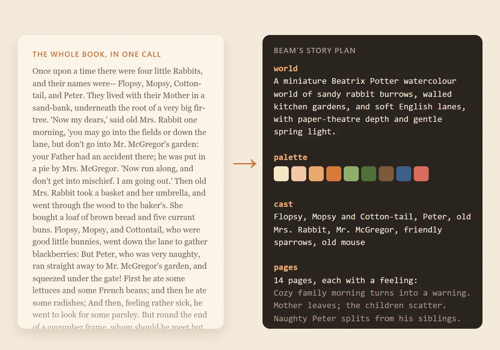
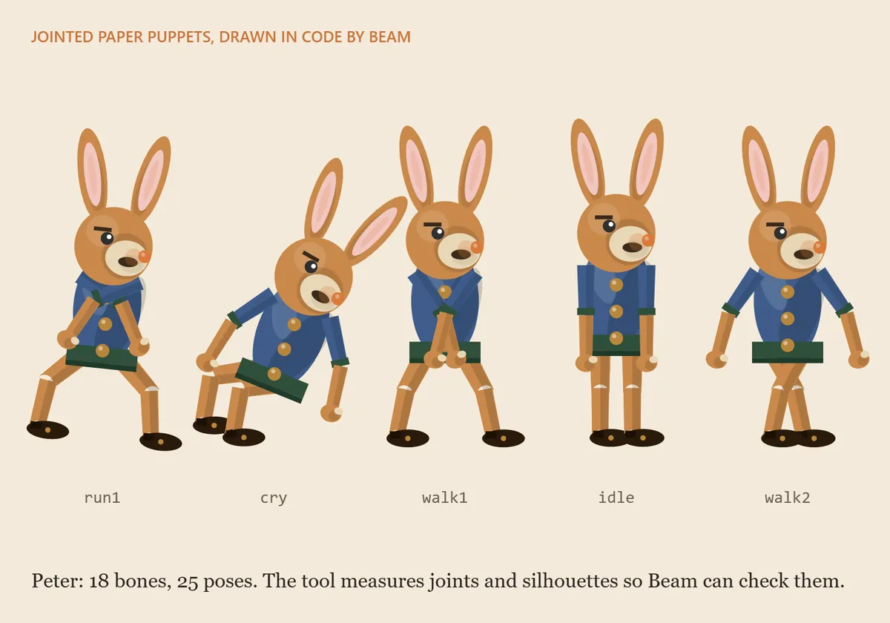
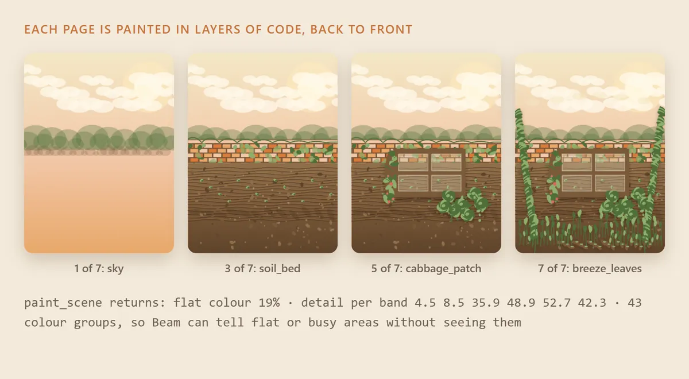
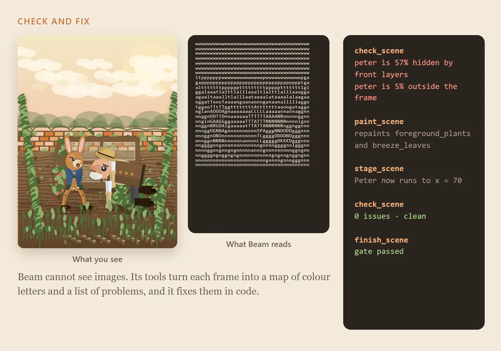
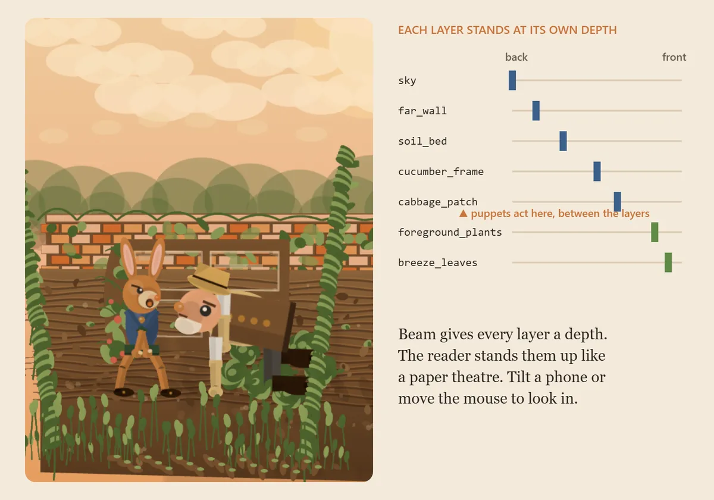

Read a whole classic, page by page, with every scene alive as a little paper pop-up. For families to read together, and for anyone who misses finishing a book.
Every page is made the same way. Here is Beam's real record of page 5 of Peter Rabbit, in 20 seconds, then step by step.

Beam takes in the complete text in one call and writes a story plan: the world, a palette, the cast, and a feeling for every page.

Each character is a jointed paper puppet: bones, drawing code and named poses, all written by Beam. The tool measures joints and outlines so Beam can check them.

Beam paints each page as layers of code, back to front. The tool answers with numbers: how flat or busy each band of the picture is.

Beam cannot see images. A checker turns each frame into a map of colour letters and a list of problems. Beam fixes them in code until the page is clean.

Every layer has a depth, so the reader stands the page up like a paper theatre, with the puppets acting between the layers. Tilt a phone to look in.
See what Beam actually did, call by call. Beam cannot see images, so it works from the measurements. For the visual side, a third-party multimodal model looked at frames of every page and sent notes back; any model with image input can do this. Beam made every fix.